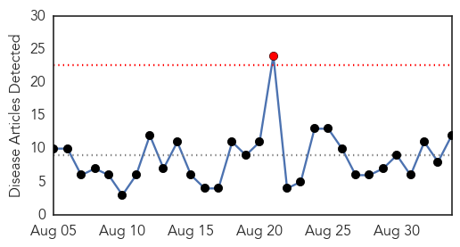

30 Day Trends
Web: 1 alerts, 0 warnings
Twitter: 0 alerts, 0 warnings
Top Articles:
- 0.993
- First human case of West Nile confirmed in Broomfield
- 0.953
- West Nile strikes first Marion County resident of year
- 0.930
- West Nile Virus Claims 2 Lives in Illinois
- 0.927
- Two New Cases of West Nile Virus confirmed in Northwest Louisiana
- 0.889
- West Nile Virus found west of Blo-No – Vidette Online
- 0.871
- 1st Human Case of West Nile of Year Confirmed in South-central Idaho
- 0.867
- REGION: Wet summer raises mosquito -- and West Nile virus -- danger
- 0.841
- Woman living in 79927 ZIP codes dies from West Nile virus
- 0.741
- 2 sentinel chickens test positive for West Nile
- 0.699
- Connecticut officials warn about infected mosquitoes
- 0.645
- North Dakota Health Department confirms case of West Nile virus in Grand Forks County
- 0.601
- Going to the state fair? Stay away from bugs and disease
Top Tweets:
-
No tweets found for Sep 03, 2015
Web/News Articles
Tweets

Article Locations